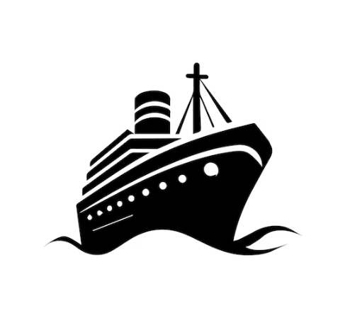

<!DOCTYPE html>
<html lang="en">
<head>

  <script>
  window.va = window.va || function () {
    (window.vaq = window.vaq || []).push(arguments);
  };
  </script>
  <script defer src="/_vercel/insights/script.js"></script>
  
  <meta charset="UTF-8">

  <title>Welland Canal Bridge Status | Real-Time Bridge Lift Map</title>
  <meta name="description" content="Live Welland Canal bridge status for St. Catharines, Thorold, Welland, and Port Colborne. Real-time map showing which bridges are up, down, or raising soon. Updated automatically for commuters.">

  <meta name="viewport" content="width=device-width, initial-scale=1.0">
  <link rel="apple-touch-icon" sizes="180x180" href="/apple-touch-icon.png">
  <link rel="icon" type="image/png" sizes="32x32" href="/favicon-32x32.png">
  <link rel="icon" type="image/png" sizes="16x16" href="/favicon-16x16.png">
  <link rel="manifest" href="/site.webmanifest">
    <!-- Canonical URL -->
    <link rel="canonical" href="https://www.bridgestatus.ca/" />

    <!-- Open Graph -->
    <meta property="og:title" content="Welland Canal Bridge Status">
    <meta property="og:description" content="Real-time Welland Canal bridge lift status. Avoid delays by checking live bridge states.">
    <meta property="og:type" content="website">
    <meta property="og:url" content="https://www.bridgestatus.ca/">
    <meta property="og:image" content="https://www.bridgestatus.ca/logo.png">

  <!-- X -->
  <meta name="twitter:card" content="summary_large_image">
  <meta name="twitter:title" content="Welland Canal Bridge Status">
  <meta name="twitter:description" content="Real-time bridge lift status along the Welland Canal.">

  <!-- JSON-LD Structured Data -->
  <script type="application/ld+json">
  {
    "@context": "https://schema.org",
    "@type": "WebApplication",
    "name": "Welland Canal Bridge Status",
    "url": "https://www.bridgestatus.ca/",
    "applicationCategory": "TrafficMonitoring",
    "description": "Live Welland Canal bridge status updated continuously for commuters.",
    "operatingSystem": "Web"
  }
  </script>

  <meta name="viewport" content="width=device-width, initial-scale=1.0">
  <script crossorigin src="https://unpkg.com/react@18/umd/react.production.min.js"></script>
  <script crossorigin src="https://unpkg.com/react-dom@18/umd/react-dom.production.min.js"></script>
  <script src="https://cdn.jsdelivr.net/npm/@babel/standalone/babel.min.js"></script>
  <script src="https://cdn.tailwindcss.com"></script>
  <link href="https://fonts.googleapis.com/css2?family=Montserrat:wght@400;700&display=swap" rel="stylesheet">
  <style>
    body { 
      font-family: 'Montserrat', sans-serif; 
      margin: 0;
      padding: 0;
    }
    
    /*SEO*/

    /*Glass morphism effect */
    .glass {
      background: rgba(255, 255, 255, 0.1);
      backdrop-filter: blur(10px);
      border: 2px solid rgba(255, 255, 255, 0.2);
    }
    
    /* Animated gradient background for header */
    @keyframes gradient {
      0% { background-position: 0% 50%; }
      50% { background-position: 100% 50%; }
      100% { background-position: 0% 50%; }
    }
    
    .animated-gradient {
      background: linear-gradient(135deg, #035379, #024a63, #035379);
      background-size: 200% 200%;
      animation: gradient 8s ease infinite;
    }

    /* Floating button style */
    .floating-button {
      box-shadow: 0 2px 8px rgba(0, 0, 0, 0.3);
      transition: all 0.2s ease;
    }

    .floating-button:hover {
      box-shadow: 0 4px 16px rgba(0, 0, 0, 0.4);
      transform: scale(1.05);
    }

    .floating-button:active {
      transform: scale(0.95);
    }
  </style>
</head>
<body>

  
  <div id="root"></div>

  <script type="text/babel">
    const { useState, useEffect, useRef, useCallback } = React;

    // ============ CONSTANTS ============
    const BRIDGE_DATA = [
      { name: "Bridge 1", location: "Lakeshore Rd. (St. Catharines)", lat: 43.21623852274046, lng: -79.2121272063928 },
      { name: "Bridge 3A", location: "Carlton St. (St. Catharines)", lat: 43.191911962120976, lng: -79.20093237793138 },
      { name: "Bridge 4", location: "Queenston St. (St. Catharines)", lat: 43.16599516348815, lng: -79.19444584468829 },
      { name: "Bridge 5", location: "Glendale Ave. (St. Catharines)", lat: 43.14549183202389, lng: -79.1923500322874 },
      { name: "Bridge 11", location: "Highway 20 (Thorold)", lat: 43.076878412812015, lng: -79.21046458925635 },
      { name: "Bridge 19", location: "Main St. (Port Colborne)", lat: 42.90152711319618, lng: -79.24537865530645 },
      { name: "Bridge 19A", location: "Mellanby Ave. (Port Colborne)", lat: 42.8965101134639, lng: -79.24656798681 },
      { name: "Bridge 21", location: "Clarence St. (Port Colborne)", lat: 42.8867208876898, lng: -79.24838049606134 }
    ];

    // ============ SERVICE LAYER (SRP) ============
    class BridgeService {
      constructor(apiUrl) {
        this.apiUrl = apiUrl;
      }

      async fetchBridgeData() {
        try {
          const res = await fetch(this.apiUrl);
          const data = await res.json();
          return Array.isArray(data.bridges) ? data.bridges : [];
        } catch (err) {
          console.error("Fetch error:", err);
          return [];
        }
      }
    }

    // ============ MAP MANAGER (SRP) ============
    class MapManager {
      constructor(map) {
        this.map = map;
        this.userMarker = null;
        this.userPos = null;
        this.initialCentered = false;
        this.watchId = null;
      }

      startTracking() {
        if (!navigator.geolocation) {
          console.warn("Geolocation not supported");
          return;
        }

        this.watchId = navigator.geolocation.watchPosition(
          (position) => {
            this.userPos = {
              lat: position.coords.latitude,
              lng: position.coords.longitude
            };

            if (this.userMarker) {
              this.userMarker.setPosition(this.userPos);
            } else if (window.google) {
              this.userMarker = new window.google.maps.Marker({
                position: this.userPos,
                map: this.map,
                title: "Your Current Location",
                icon: {
                  path: window.google.maps.SymbolPath.CIRCLE,
                  scale: 8,
                  fillColor: "#4285F4",
                  fillOpacity: 1,
                  strokeColor: "white",
                  strokeWeight: 3
                },
                zIndex: 9999
              });
            }

            if (!this.initialCentered && this.map) {
              this.map.setCenter(this.userPos);
              this.map.setZoom(12);
              this.initialCentered = true;
            }
          },
          (error) => console.warn("Geolocation error:", error),
          { 
            enableHighAccuracy: true, 
            timeout: 10000, 
            maximumAge: 0 
          }
        );
      }

      stopTracking() {
        if (this.watchId) {
          navigator.geolocation.clearWatch(this.watchId);
        }
      }

      recenter() {
        if (this.userPos && this.map) {
          this.map.setCenter(this.userPos);
          this.map.setZoom(13);
        }
      }
    }

    // ============ BRIDGE MANAGER (SRP) ============
    class BridgeManager {
      constructor(map) {
        this.map = map;
        this.bridgeMarkers = [];
      }

      getStatusColor(status) {
        const s = (status || "").toLowerCase();
        if (s === "loading...") return "#6b7280";
        if (s === "available") return "#10b981";
        if (s.includes("raising soon")) return "#fbbf24";
        if (s.includes("lowering")) return "#a855f7";
        if (s.includes("unavailable") || s.includes("raised") || s.includes("closed")) return "#ef4444";
        return "#6b7280";
      }

      clearMarkers() {
        this.bridgeMarkers.forEach(marker => marker.setMap(null));
        this.bridgeMarkers = [];
      }

      initializeMarkers() {
        this.clearMarkers();
        BRIDGE_DATA.forEach(bridge => {
          this.addMarker({ ...bridge, status: "Loading..." });
        });
      }

      updateMarkers(apiBridges) {
        this.clearMarkers();
        
        BRIDGE_DATA.forEach(localBridge => {
          const apiBridge = apiBridges.find(b => 
            b.name.toLowerCase().includes(localBridge.name.toLowerCase()) ||
            localBridge.name.toLowerCase().includes(b.name.toLowerCase())
          );
          
          const status = apiBridge ? (apiBridge.status || "Unknown") : "Unknown";
          this.addMarker({ ...localBridge, status });
        });
      }

      addMarker(bridge) {
        const { name, status, lat, lng, location } = bridge;
        const color = this.getStatusColor(status);

        const marker = new window.google.maps.Marker({
          position: { lat, lng },
          map: this.map,
          title: `${name}: ${status}`,
          icon: {
            path: window.google.maps.SymbolPath.CIRCLE,
            scale: 10,
            fillColor: color,
            fillOpacity: 0.9,
            strokeColor: "white",
            strokeWeight: 2
          }
        });

        const infoWindow = new window.google.maps.InfoWindow({
          content: `<div style="font-family: 'Montserrat', sans-serif; padding: 8px;">
            <strong style="font-size: 14px;">${name}</strong><br/>
            <span style="color: #666;">Status: <strong>${status}</strong></span><br/>
            <em style="font-size: 12px; color: #888;">${location}</em>
          </div>`
        });

        marker.addListener("click", () => infoWindow.open(this.map, marker));
        this.bridgeMarkers.push(marker);
      }
    }

    // ============ ICONS ============
    const BridgeIcon = () => (
      <svg xmlns="http://www.w3.org/2000/svg" width="40" height="40" viewBox="0 0 64 64" fill="currentColor">
        <path d="M4,25v-6c0-1.1,0.9-2,2-2h3V3c0-1.1,0.9-2,2-2h6c1.1,0,2,0.9,2,2v14h4V3c0-1.1,0.9-2,2-2h6c1.1,0,2,0.9,2,2v14h4V3c0-1.1,0.9-2,2-2h6c1.1,0,2,0.9,2,2v14h3c1.1,0,2,0.9,2,2v6c0,1.1-0.9,2-2,2h-3v8h1c1.1,0,2,0.9,2,2v6c0,1.1-0.9,2-2,2h-6v10c0,1.1-0.9,2-2,2s-2-0.9-2-2V45H22v10c0,1.1-0.9,2-2,2s-2-0.9-2-2V45h-6c-1.1,0-2-0.9-2-2v-6c0-1.1,0.9-2,2-2h1v-8H6C4.9,27,4,26.1,4,25z M21,28h7v-8h-7V28z M43,28v-8h-7v8H43z M36,30h-8v8h8V30z"/>
      </svg>
    );

    const Navigation = () => (
      <svg xmlns="http://www.w3.org/2000/svg" width="24" height="24" viewBox="0 0 24 24" fill="none" stroke="currentColor" strokeWidth="2.5">
        <polygon points="3 11 22 2 13 21 11 13 3 11"></polygon>
      </svg>
    );

    // ============ MAIN APP ============
    const WellandCanalApp = () => {
      const [sidebarOpen, setSidebarOpen] = useState(false);
      const [isLoading, setIsLoading] = useState(true);
      const [selectedBridge, setSelectedBridge] = useState("");
      const [apiKey, setApiKey] = useState(null);
      const mapRef = useRef(null);
      const googleMapRef = useRef(null);
      const mapManagerRef = useRef(null);
      const bridgeManagerRef = useRef(null);
      const bridgeServiceRef = useRef(null);
      // Fetch API key from backend
      useEffect(() => {
        const fetchApiKey = async () => {
          try {
            const res = await fetch('/api/maps-config');
            const data = await res.json();
            setApiKey(data.apiKey);
          } catch (err) {
            console.error("Failed to fetch API key:", err);
          }
        };
        fetchApiKey();
      }, []);

      useEffect(() => {
         if (!apiKey) return; 
         
        const initMap = () => {
          if (!window.google || !mapRef.current) return;

          googleMapRef.current = new window.google.maps.Map(mapRef.current, {
            center: { lat: 43.160, lng: -79.246 },
            zoom: 11,
            disableDefaultUI: true,
            gestureHandling: "greedy",
            styles: [
              { featureType: "poi", elementType: "all", stylers: [{ visibility: "off" }] },
              { featureType: "transit", elementType: "all", stylers: [{ visibility: "off" }] },
              { featureType: "road", elementType: "labels.icon", stylers: [{ visibility: "off" }] }
            ]
          });

          mapManagerRef.current = new MapManager(googleMapRef.current);
          bridgeManagerRef.current = new BridgeManager(googleMapRef.current);
          bridgeServiceRef.current = new BridgeService("/api/bridges");

          bridgeManagerRef.current.initializeMarkers();
          mapManagerRef.current.startTracking();
          
          fetchBridgeData();
        };

        if (window.google) {
          initMap();
        } else {
          const script = document.createElement('script');
          script.src = `https://maps.googleapis.com/maps/api/js?key=${apiKey}`;
          script.async = true;
          script.onload = initMap;
          document.head.appendChild(script);
        }

        return () => {
          if (mapManagerRef.current) {
            mapManagerRef.current.stopTracking();
          }
        };
      }, [apiKey]);

      const fetchBridgeData = useCallback(async () => {
        if (!bridgeServiceRef.current || !bridgeManagerRef.current) return;

        const apiBridges = await bridgeServiceRef.current.fetchBridgeData();
        bridgeManagerRef.current.updateMarkers(apiBridges);
        setIsLoading(false);
      }, []);

      useEffect(() => {
        const interval = setInterval(fetchBridgeData, 30000);
        return () => clearInterval(interval);
      }, [fetchBridgeData]);

      const recenterMap = () => {
        if (mapManagerRef.current) {
          mapManagerRef.current.recenter();
        }
        setSelectedBridge("");
      };

      const goToBridge = (bridgeName) => {
        setSelectedBridge(bridgeName);

        const bridge = BRIDGE_DATA.find(b => b.name === bridgeName);
        if (!bridge || !googleMapRef.current) return;

        googleMapRef.current.panTo({ lat: bridge.lat, lng: bridge.lng });
        googleMapRef.current.setZoom(14);
      };


      return (
        <div className="flex flex-col h-screen bg-gradient-to-br from-gray-50 to-gray-100">
          {/* Header */}
          <header className="animated-gradient text-white px-4 py-3 flex items-center justify-between fixed top-0 left-0 right-0 z-50 shadow-lg">
            <div className="flex items-center gap-3">
              <div className="logo-section flex items-center gap-4">
                <div className="w-12 h-12 rounded-full bg-white p-2 flex items-center justify-center shadow-lg">
                  
                </div>
                <h1 className="text-sm md:text-xl font-bold uppercase tracking-wider">
                  Welland Canal Bridge Status
                </h1>
              </div>
            </div>
            <button
              onClick={() => setSidebarOpen(true)}
              className="glass rounded-full px-4 py-2 text-xs md:text-sm font-bold uppercase hover:bg-white hover:text-[#035379] transition-all duration-300 shadow-lg"
            >
              Menu
            </button>
          </header>

          {/* Sidebar */}
          <div className={`fixed top-0 right-0 w-64 h-full animated-gradient text-white shadow-2xl z-50 transition-transform duration-300 ${sidebarOpen ? 'translate-x-0' : 'translate-x-full'}`}>
            <button
              onClick={() => setSidebarOpen(false)}
              className="absolute top-5 left-1/2 -translate-x-1/2 glass rounded-full px-4 py-2 text-sm font-bold uppercase hover:bg-white hover:text-[#035379] transition-all duration-300"
            >
              Close
            </button>
            <nav className="mt-20 space-y-2 p-4">
              <a href="/" className="block px-6 py-3 text-center font-bold uppercase rounded-xl glass hover:bg-white hover:text-[#035379] transition-all duration-300">
                Home
              </a>
              <a href="/about.html" className="block px-6 py-3 text-center font-bold uppercase rounded-xl glass hover:bg-white hover:text-[#035379] transition-all duration-300">
                About
              </a>
            </nav>
          </div>

          {sidebarOpen && (
            <div onClick={() => setSidebarOpen(false)} className="fixed inset-0 bg-black bg-opacity-50 z-40 backdrop-blur-sm" />
          )}

          {/* Map Container with Floating Button */}
          <div className="flex-1 mt-16 relative">
            <div ref={mapRef} className="w-full h-full" />
            
            {/* Loading Indicator */}
            {isLoading && (
              <div className="absolute top-4 left-1/2 -translate-x-1/2 bg-white rounded-xl px-6 py-3 text-[#035379] font-bold shadow-lg">
                Loading bridge data...
              </div>
            )}

            {/* Floating Bridge Selector */}
            <div className="absolute bottom-4 left-4 md:left-6 z-20">
              <div className="md:hidden">
                <select 
                  value={selectedBridge}
                  onChange={(e) => goToBridge(e.target.value)}
                  className="p-1 text-xs rounded-full border font-semibold text-[#035379]"
                >
                  <option value="" disabled>Bridge</option>
                  {BRIDGE_DATA.map((b) => (
                    <option key={b.name} value={b.name}>{b.name}</option>
                  ))}
                </select>
              </div>

              <div className="hidden md:block bg-white p-3 rounded-xl shadow-lg">
                <select 
                  value={selectedBridge}
                  onChange={(e) => goToBridge(e.target.value)}
                  className="p-2 rounded-lg border font-semibold text-[#035379]"
                >
                  <option value="" disabled>Select a Bridge</option>
                  {BRIDGE_DATA.map((b) => (
                    <option key={b.name} value={b.name}>{b.name}</option>
                  ))}
                </select>
              </div>
            </div>

            {/* Floating Recenter Button - Google Maps Style */}
            <button
              onClick={recenterMap}
                className="floating-button absolute bottom-4 right-4 md:right-6 bg-white text-[#035379] p-3 rounded-full hover:bg-gray-50 z-10"
              title="Recenter on my location"
            >
              <Navigation />
            </button>
          </div>

          {/* Legend */}
          <div className="bg-white border-t-4 border-[#10b981] px-6 py-5">
            <div className="max-w-4xl mx-auto">
              <p className="font-bold uppercase text-base mb-3 text-[#035379] text-center">Welland Canal Bridge Legend</p>
              <p className="text-sm text-gray-600 mb-4 text-center">
                Click on a bridge marker to see its status and location.
              </p>

              <div className="flex flex-wrap justify-center gap-4 text-sm font-semibold">
                <span className="flex items-center gap-2 px-4 py-2 glass rounded-full">
                  <span className="w-5 h-5 rounded-full bg-green-500 shadow-md"></span>
                  Open
                </span>
                <span className="flex items-center gap-2 px-4 py-2 glass rounded-full">
                  <span className="w-5 h-5 rounded-full bg-red-500 shadow-md"></span>
                  Closed
                </span>
                <span className="flex items-center gap-2 px-4 py-2 glass rounded-full">
                  <span className="w-5 h-5 rounded-full bg-yellow-400 shadow-md"></span>
                  Raising Soon
                </span>
                <span className="flex items-center gap-2 px-4 py-2 glass rounded-full">
                  <span className="w-5 h-5 rounded-full bg-purple-500 shadow-md"></span>
                  Lowering
                </span>
                <span className="flex items-center gap-2 px-4 py-2 glass rounded-full">
                  <span className="w-5 h-5 rounded-full bg-blue-500 shadow-md"></span>
                  You Are Here
                </span>
              </div>
            </div>
          </div>

          <div style={{ display: "none" }}>
            <section className="bg-white px-6 py-6 border-t border-gray-200">
              <div className="max-w-4xl mx-auto text-sm text-gray-700 space-y-3">
                <h2 className="text-lg font-bold text-[#035379]">
                  Live Welland Canal Bridge Status
                </h2>
                <p>
                  BridgeStatus.ca provides real-time updates for all lift bridges along the Welland Canal
                  in St. Catharines, Thorold, Welland, and Port Colborne.
                </p>
                <p>
                  This tool helps commuters avoid delays caused by ship crossings.
                </p>
              </div>
            </section>
          </div>

          {/* Footer */}
          <footer className="animated-gradient text-white text-center py-4 text-xs font-bold uppercase tracking-wide">
            © 2025 Bridge Status Visualizer
          </footer>
        </div>
      );
    };
    
    ReactDOM.render(<WellandCanalApp />, document.getElementById('root'));
  </script>
</body>
</html>